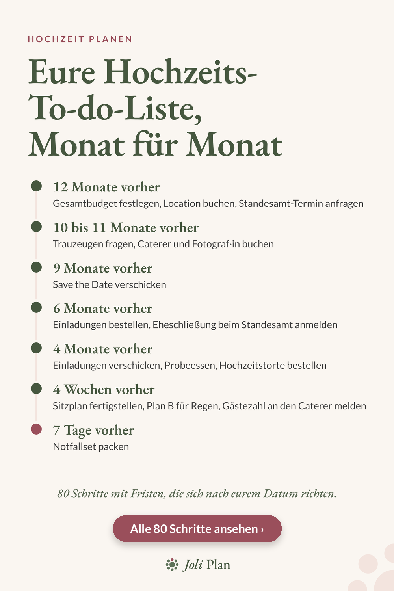

Zeitplan
Hochzeit planen: die Checkliste für 12 Monate bis zum Hochzeitstag
Ein Jahr vor der Hochzeit wirkt alles dringend. Mit einer Liste, die nach Monaten geordnet ist, seht ihr, was jetzt dran ist und was noch warten kann.

Die wichtigsten Schritte nach Monaten
- 12 Monate vorher: Gesamtbudget festlegen, Location buchen, Standesamt-Termin anfragen.
- 10 bis 11 Monate vorher: Trauzeugen fragen, Caterer und Fotograf·in buchen.
- 9 Monate vorher: Save the Date verschicken.
- 6 Monate vorher: Einladungen bestellen, Eheschließung beim Standesamt anmelden.
- 4 Monate vorher: Einladungen verschicken, Probeessen, Hochzeitstorte bestellen.
- 4 Wochen vorher: Sitzplan fertigstellen, Plan B für Regen, Gästezahl an den Caterer melden.
- 7 Tage vorher: Notfallset packen.
Warum diese Reihenfolge
Budget und Gästezahl entscheiden, wie groß die Location sein muss. Die Location legt oft das Datum fest. Wer eine Location bucht, bevor das Budget steht, muss später womöglich alles neu rechnen.
Caterer und Fotograf·in folgen direkt nach der Location, weil beliebte Anbieter früh ausgebucht sein können. Das Save the Date kommt vor den Einladungen, damit eure Gäste das Datum früh im Kalender haben.
So behaltet ihr den Überblick
- Hakt jeden Schritt ab, sobald er erledigt ist.
- Schiebt nichts auf die letzten vier Wochen, was sich früher erledigen lässt.
- Verteilt Aufgaben an Trauzeugen und Familie, statt alles allein zu tragen.